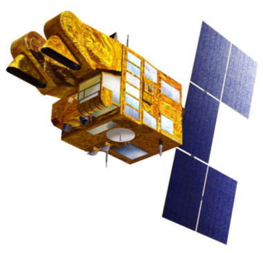

Изкуствен спътник (на английски: satellite) е обект, произлязъл от човешка дейност и изведен в орбита около Земята или друго небесно тяло.
Този вид спътници на български се наричат още и сателити, което произлиза от английската дума за спътник. Сателитите днес изпълняват важна роля в комуникациите.
Сателитите биват:
- Астрономически спътници - използват се за наблюдение на отдалечени планети, галактики и други космически обекти.
- Биоспътниците са изкуствени спътници пригодени да носят живи организми, основно за научно експериментиране.
- Комуникационни спътници - използват се за комуникации и за предаване на данни. Повечето комуникационни спътници се намират на геостационарни орбити и са обикновени ретранслатори на радиосигнали в микровълновия диапазон. Съществуват и по-сложни системи за двустранна връзка, както и нискоорбитални спътници за изграждане на телекомуникационни мрежи.
- Наблюдателни спътници - проектирани са да наблюдават Земята, подобно на разузнавателните спътници, но за невоенни цели. Тези спътници се използват за метеорологични наблюдения, наблюдения на околната среда, картография и др.
- Навигационни спътници - използват се за навигация, като излъчват радиосигнали и позволяват на потребителите, снабдени с необходимата апаратура за приемането им, да определят точното си местоположение.
- Разузнавателен спътник – тайни спътници, обикновено разработени от правителството и военните, използвани за военни и разузнавателни цели.
- Енергийни спътници - проектирани да събират слънчева енергия, като я преобразуват в микровълни и да я изпращат към Земята, за да генерират електричество.
- Космически станции – обитаеми станции в орбита около Земята.
- Метеорологични спътници - използвани за метеорологични нужди и наблюдение на климата на Земята.
- Миниатюрни спътници - спътници с малки размери и маса.